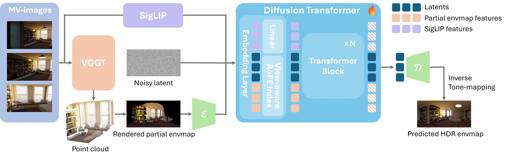
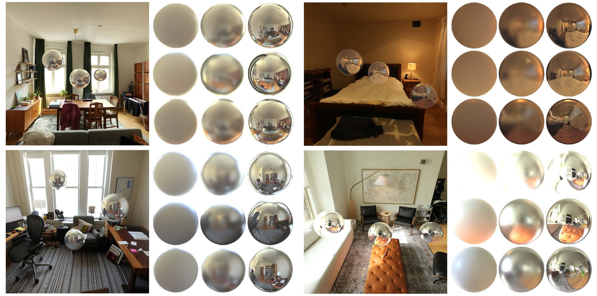
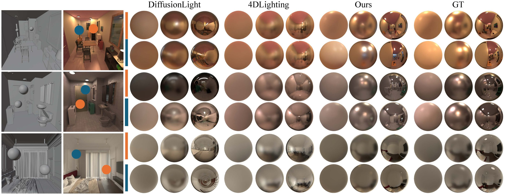
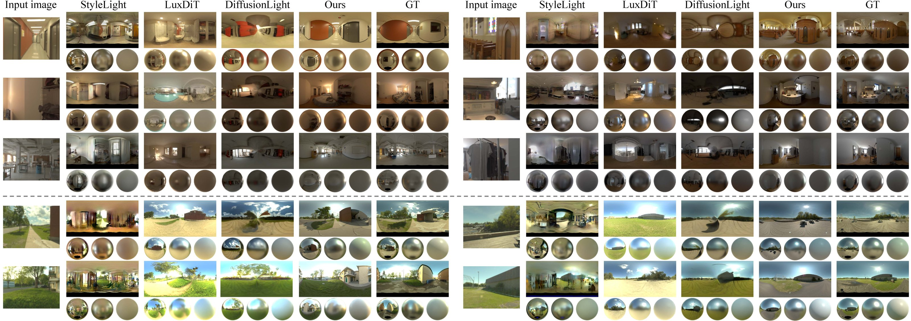
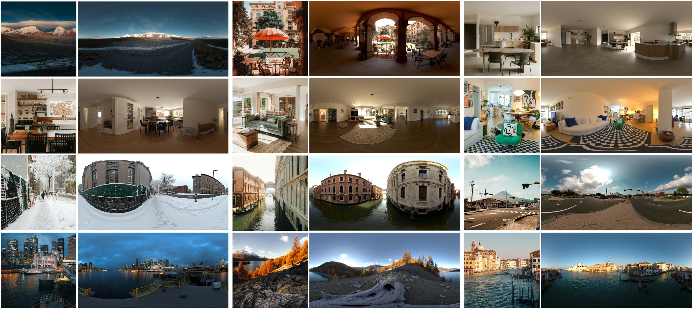
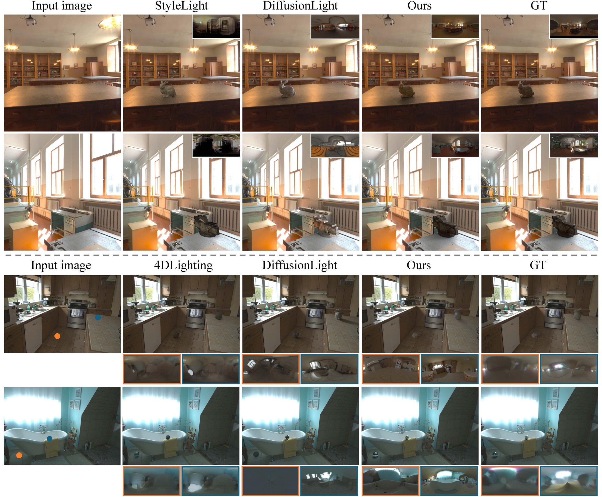
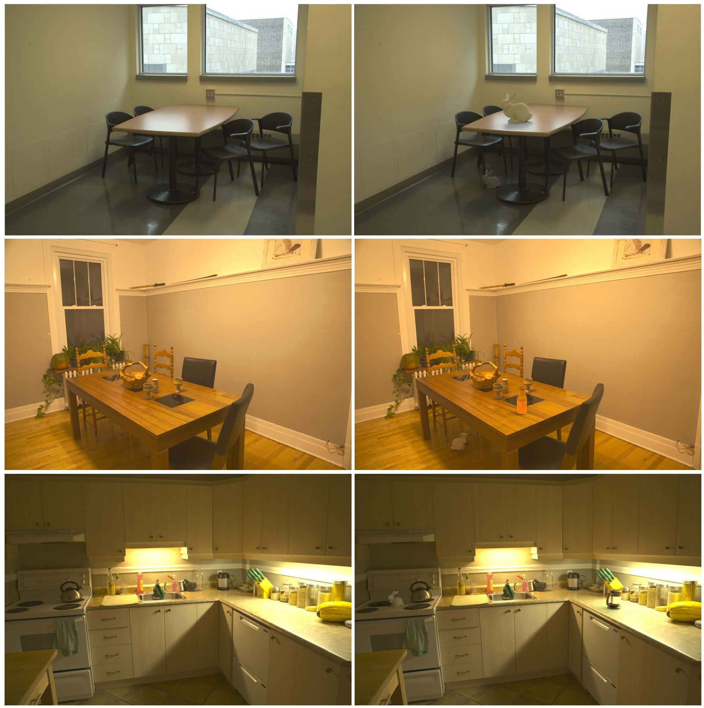

Estimating scene illumination from images is challenging as lighting is inherently spatially varying, depending on geometry, occlusion, and light sources. Existing methods incorporate geometric cues by deriving local environment maps or probe-based representations, but largely rely on regression or parametric models, resulting in over-smoothed lighting and limited realism. We revisit spatially-varying illumination estimation from a generative perspective and introduce LUMEN, a geometry-conditioned diffusion framework for synthesizing high-dynamic-range (HDR) environment maps at arbitrary spatial locations from single or multi-view images. Specifically, we reconstruct a coarse 3D scene from input images and render partial environment maps at arbitrary locations to encode visibility and spatial structure. These signals are fused with multi-view image features and fed into a diffusion transformer to generate full HDR environment maps. To train the model, we build a synthetic dataset of 700 indoor scenes with dense spatial supervision, including multi-view RGB images, depth, and HDR illumination at multiple sampled locations. This dataset enables the model to learn spatially consistent lighting distributions across diverse scenes. Extensive experiments demonstrate that LUMEN significantly improves visual fidelity and spatial coherence compared to prior approaches.

For each query location, the reconstructed point cloud is rendered into a panorama centered at that location. This partial environment map captures visibility and occlusion, and serves as an explicit spatial condition: moving the query point changes the condition and thus the generated illumination.
Built on FLUX.1-dev and fine-tuned with LoRA. Input views are encoded with SigLIP, the partial environment map with the VAE; both are concatenated with the noisy latent into a unified token sequence with a view-aware RoPE index. HDR is recovered by inverse Reinhard tone mapping.
A synthetic dataset of ~700 indoor scenes built on Infinigen Indoors, with multi-view RGB images, depth, cameras and HDR light probes at many locations, combined with 1,527 real-world HDR panoramas for robustness in the wild.
A virtual light probe is placed directly in front of the camera. As the camera moves through the real scene, LUMEN predicts the HDR environment map at the probe's current location, and the probe is rendered with it, so its reflection follows the changes of the surrounding illumination.






@inproceedings{lumen2026,
title = {LUMEN: Geometry-Guided Diffusion Model for Spatially-Varying HDR Illumination Estimation},
author = {Hongze Chen and Fangyu Lin and Runze Zhang and Lingting Zhu and Weikai Chen and Zeyu Hu and Yingda Yin and Keyang Luo and Xin Wang and Zehong Lin and Jun Zhang},
booktitle = {ACM SIGGRAPH Asia 2026 Conference Papers},
year = {2026}
}